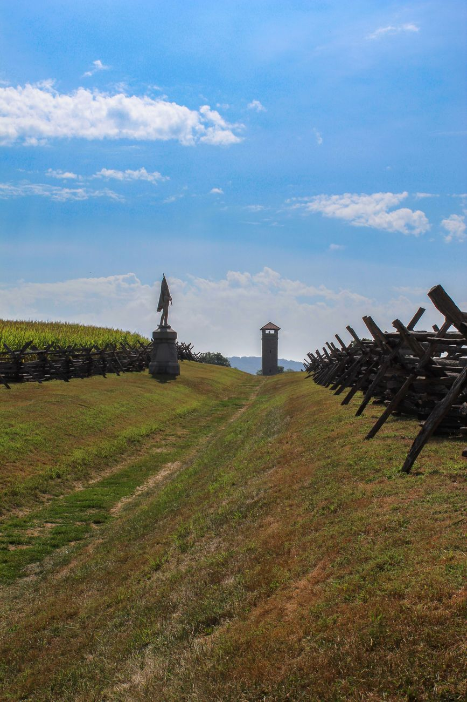

Season 1, Episode 9 — Antietam, September 17, 1862

The bloodiest single day in American history — 23,000 casualties in 12 hours. And for the Class of 1846, it was a reunion. McClellan faced Jackson and A.P. Hill — his former roommate, the man whose fiancée he had stolen. The love triangle had its payoff in the smoke of a Maryland cornfield.
Summer 1862. After a stunning string of victories in Virginia — the Seven Days, Second Bull Run — Robert E. Lee decides to invade the North. He needs a victory on Union soil to convince Europe to recognize the Confederacy, to demoralize the North, and to give his starving army access to Maryland's rich farmland.
McClellan commands the Army of the Potomac — 87,000 men, well-fed, well-equipped, well-trained. Lee has about 55,000 — his army is exhausted, ragged, and outnumbered. Many of Lee's men are barefoot. They are surviving on green corn and apples. The invasion is a gamble, and Lee knows it.
But Lee also knows McClellan. They served together on Winfield Scott's staff in Mexico. Lee knows McClellan is cautious. And caution, in war, can be more dangerous than any enemy bullet.
On September 13, 1862, a Union soldier named Barton Mitchell was resting in a field near Frederick, Maryland, when he noticed a piece of paper lying in the grass — wrapped around three cigars. It was a copy of Lee's Special Order 191 — the complete plan for the Confederate campaign in Maryland.
The order revealed everything: Lee had divided his army into four parts. Jackson was marching to capture Harpers Ferry. Longstreet was moving toward Hagerstown. The army was scattered across a 30-mile front. McClellan now knew EXACTLY where every Confederate corps was, and exactly what Lee intended to do.
McClellan famously said: "Here is a paper with which if I cannot whip Bobbie Lee, I will be willing to go home."
But then he hesitated. Confederate spies had fed him inflated numbers for months — he had come to believe Lee outnumbered him 2-to-1. He waited 18 hours before moving. That delay nearly cost him the war.
McClellan's caution is the defining tragedy of his career. He had Lee's plan in his hands. He had a 3-to-2 numerical advantage. He had the element of surprise. And he waited. By the time he moved, Jackson had already captured Harpers Ferry and was racing to rejoin Lee.
The battle begins at dawn with a Union attack on Lee's left flank, held by Stonewall Jackson's corps. The fighting centers on a 30-acre cornfield near the Dunker Church. The cornfield changes hands six times in three hours. Entire regiments are annihilated. The corn is cut down not by scythes but by bullets — an entire generation of corn, destroyed in a morning.
Jackson's men hold. But barely. Of the 7,700 men in Jackson's corps who fight in the Cornfield, over 4,000 become casualties. The Union loses almost as many. The field looks like a slaughterhouse floor — men in blue and gray lying together, as they had once stood together as classmates.
McClellan shifts the attack to the Confederate center, held by D.H. Hill's division. Hill — Class of 1842, the scholar-soldier — defends a sunken road that becomes known as the Bloody Lane. Four hours of frontal assaults turn the road into a killing ground. Bodies pile three and four deep. The 69th New York loses 198 of 250 men in minutes.
The Union almost breaks through. A gap opens in the Confederate line. If Union reserves push through, Lee's army is cut in two. But the reserves do not come. McClellan, still convinced Lee has hidden reserves, refuses to commit them. The moment passes.
The final Union attack targets Lee's right flank. Ambrose Burnside commands the Union IX Corps. His objective: cross a narrow stone bridge over Antietam Creek and roll up the Confederate flank. The bridge is defended by 400 Georgia sharpshooters — just 400 men.
It takes Burnside three hours to cross. Three hours against 400 men on a 12-foot-wide bridge. Burnside's men finally push across and break through. By 4 PM, Burnside is advancing on Sharpsburg. Lee's army is beaten. The Union has won.
This is the moment. Lee is beaten. His army is broken. McClellan has won. Then — dust on the horizon. A column of Confederate infantry appears on Burnside's flank, marching at the double-quick. It is A.P. Hill's "Light Division" — after a forced march of 17 miles from Harpers Ferry, they have arrived just in time.
Hill slams into Burnside's exposed flank. The Union advance stops cold. Burnside's men are driven back. The battle ends in a tactical draw.
The man who saved Lee's army was A.P. Hill — McClellan's former West Point roommate, the man whose fiancée (Ellen Marcy) McClellan had married. Hill had every reason to want to beat McClellan — not just for the Confederacy, but for Ellen.
McClellan had his chance. He had Lee's plan in his hands. He outnumbered Lee 3-to-2. And he let his caution cost him — and the man who stopped him was the man whose love he had stolen.

23,000 casualties in a single day — the bloodiest in American history
Antietam was a tactical draw — neither side won the field. But it was a strategic Union victory: Lee's first invasion of the North was stopped. He retreated to Virginia, his army battered and depleted.
More importantly, Antietam gave Lincoln the political cover he needed. On September 22, 1862 — five days after the battle — Lincoln issued the preliminary Emancipation Proclamation, declaring that slaves in Confederate states still in rebellion on January 1, 1863, would be forever free. The war was no longer just about preserving the Union. It was now about ending slavery.
For McClellan, Antietam was the beginning of the end. Lincoln had warned him: destroy Lee's army. McClellan did not. Lee escaped. In November 1862, Lincoln fired McClellan. He never held another command. He ran for president against Lincoln in 1864 and lost in a landslide — 212 electoral votes to 21.
A.P. Hill was killed at Petersburg on April 2, 1865 — just days before Appomattox. He was shot through the heart by a Union straggler while trying to rally his men. The man who saved Lee at Antietam died in the final week of the war.
How this works: Work through each phase in order. Don't scroll ahead to the answers.
Cover the answers below. For each clue, respond in the form of "Who is…" or "What is…". Answers are at the bottom of this page.
Phase 1 (Fill-in-the-Blank):
Phase 2 (Core Jeopardy):
Phase 3 (Previously On… — Modules 6–8):
In Module 10: Gettysburg — The Heartbreak, the war's most famous battle, seen through its most personal tragedy. Armistead and Hancock. Pickett's Charge. The high-water mark of the Confederacy — and the moment the Class of 1846 met for the last time as an army.
Stephen W. Sears's Landscape Turned Red: The Battle of Antietam — the definitive account of the battle, rich with tactical detail and human drama. For the personal dimension, the chapter on Antietam in John C. Waugh's The Class of 1846: From West Point to Appomattox traces the love triangle and the roommate rivalry that defined the day.
Have a question about Antietam? Want to dig deeper into Special Order 191, the Bloody Lane, or the love triangle between McClellan, Hill, and Ellen Marcy? Just ask — I'm your teacher.